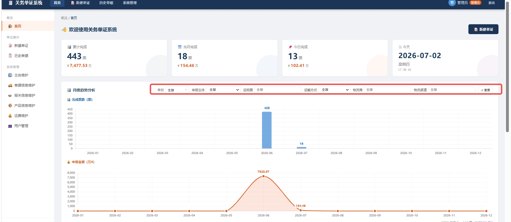
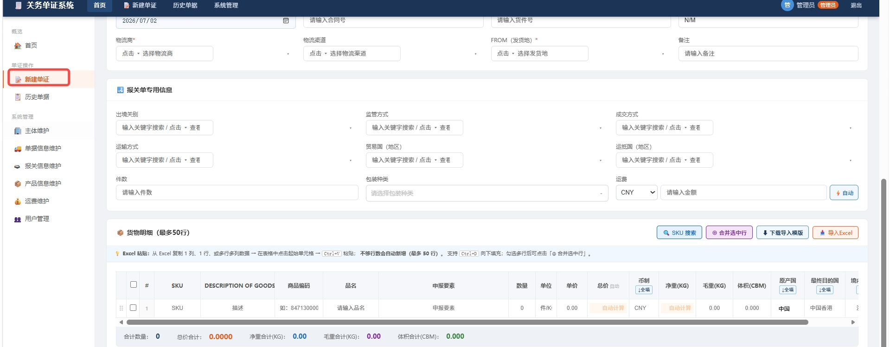
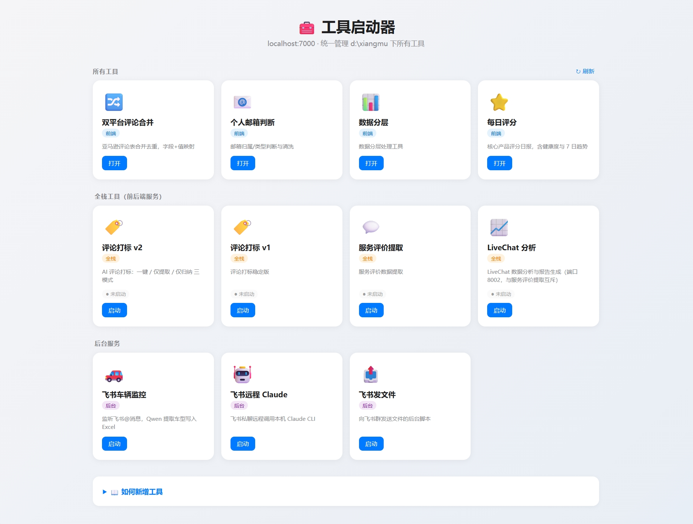
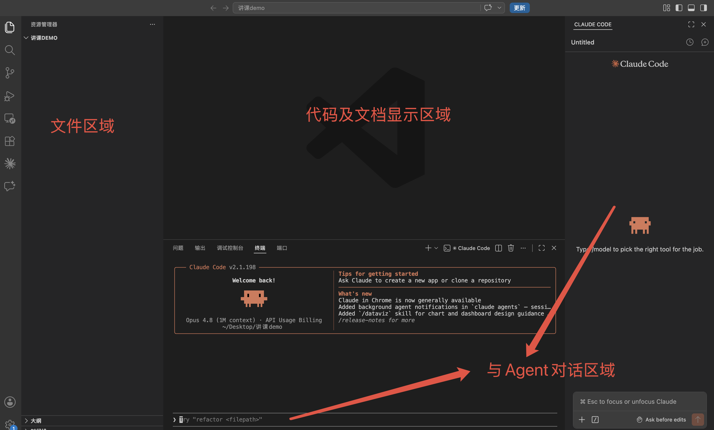

面向业务同学 · 不背术语 · 今天结束时拿到一个能用的 App



不是教你写代码，是教你把想法说清楚、把结果盯到底。
真正决定成败的，是你知不知道自己想要什么。
玩法：点击开始后，用键盘方向键控制移动。
吃到红点加分；撞墙或撞到自己，游戏结束。
这页就是刚才那段 Prompt 的现场结果。
这堂课以 Claude Code 为例，换工具也能照着走。

把模糊想法写成 AI 能执行、你能打勾的描述。
改乱了不可怕，能跑的版本才值钱。
插件白屏 / 点了没反应：右键小窗口 → 检查 → 控制台 → 复制红色报错。
| 现象 | 大概率原因 | 怎么办 |
|---|---|---|
| 加载插件时报错 | manifest 或文件名不对 | 让 AI 检查文件清单 |
| 点抓取没反应 | 脚本有小错 | 控制台报错贴回去 |
| 抓不到评论 | App ID 或接口问题 | 链接 + 报错一起发 |
| 改了没变化 | 扩展没刷新 | 回扩展页点刷新 |
抓评论和做统计是普通应用；让 AI 读懂差评、归纳问题、生成建议，就是 AI 应用。
| 方式 | 怎么做 | 适合 |
|---|---|---|
| 压缩包直接发 | 插件文件夹打 zip | 给几个同事用 |
| 打包分发 | Chrome 打包扩展或内部分发 | 团队统一装 |
| 上架商店 | 上传 Chrome Web Store | 给所有人用 |
| 卡在哪 | 一句话解法 |
|---|---|
| 做出来不是我要的 | 补约束和验收，说清不要什么 |
| 越改越乱 | 新开会话，重新讲一遍需求 |
| 报错看不懂 | 红色报错整段贴回去 |
| 需求总做不对 | 拆小，一次只让它改一个点 |
不是教你写代码，是教你把想法做出来。
Vibe Coding = 说清楚意图 + 拆清楚系统 + 盯住验收 + 一步步改到好
程立 · 数智技术部 · AI算法工程师